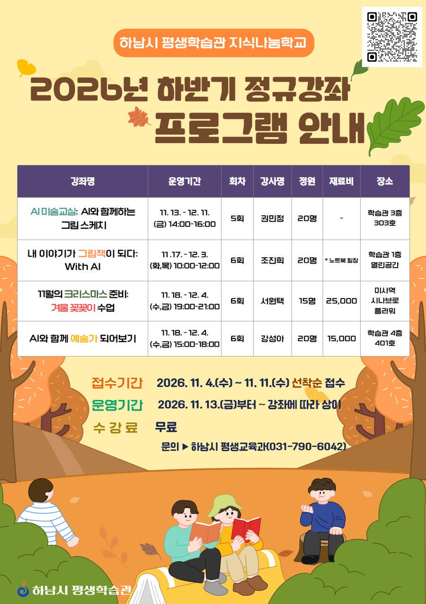
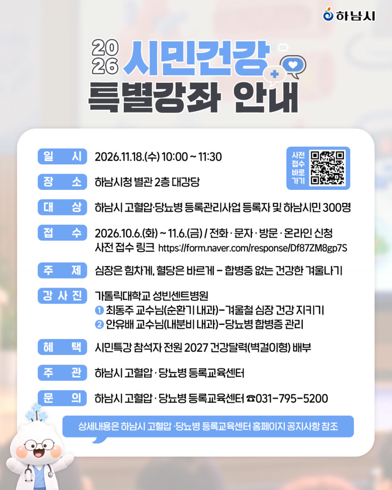
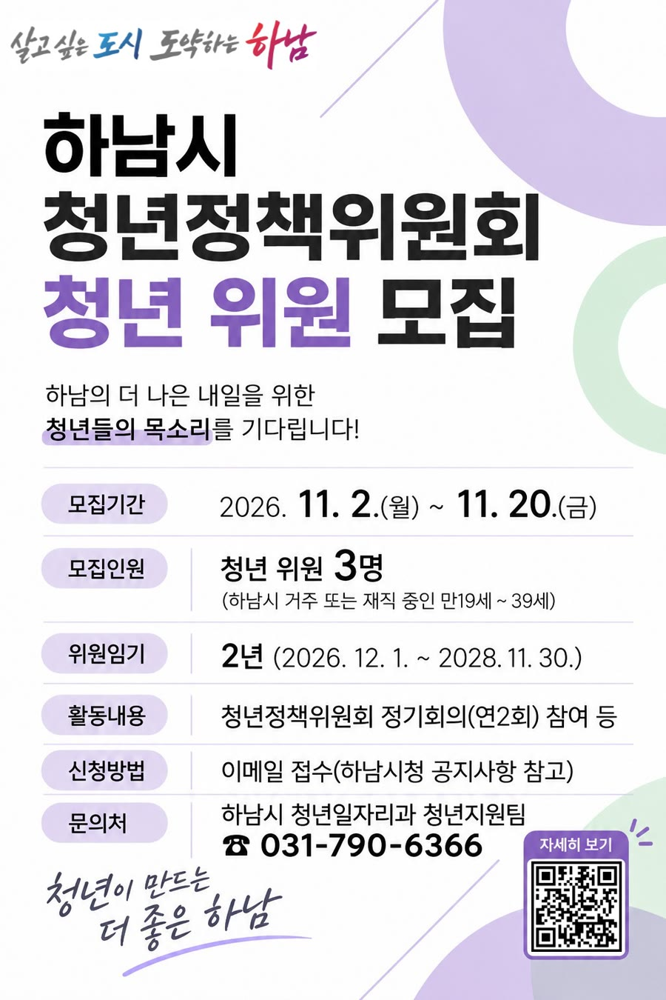

71호 | 2026년 11월 3일 발행
📌 이번 호 주요 목차
 우리동네 국회의원 이광재
우리동네 국회의원 이광재
📝 현장일지
이광재의원, 10월 다섯째주 주간이광재 "하남에서 들은 이야기, 내년 예산에 담아 오겠습니다"
• 정근식 서울시교육감과 만나 낡은 책걸상·학교 화장실 개선에 교육예산을 먼저 쓰자는 데 뜻을 모음
• 위례·감일 과밀학급 해법으로 송파구와 한시적 공동학군 운영, 부지 확보 후 학교 신속 신설, 협의체 구성 제안
• 어린이집 급·간식비 70% 국가 지원안(연 약 4,957억 원) 예산 마련 추진
• 이소영 중기부 장관에게 덕풍시장·신장시장 지원 요청
• 30일 시작된 예산 심사에 하남의 목소리를 담겠다고 다짐
• 위례·감일 과밀학급 해법으로 송파구와 한시적 공동학군 운영, 부지 확보 후 학교 신속 신설, 협의체 구성 제안
• 어린이집 급·간식비 70% 국가 지원안(연 약 4,957억 원) 예산 마련 추진
• 이소영 중기부 장관에게 덕풍시장·신장시장 지원 요청
• 30일 시작된 예산 심사에 하남의 목소리를 담겠다고 다짐
📌 출처: 이광재 공식 네이버 블로그
📰 언론보도
[KBC] 이광재의원 "국가가 돈 벌어 국민 삶 지켜야… 생애기본자산, 총선 전 입법 목표"
이광재 국회 예결위원장이 2일 KBC '뉴스메이커' 인터뷰에서 "대한민국 최고 부자는 국가"라며 돈을 쓰는 국가에서 돈을 벌어 국민의 삶을 지키는 국가로 바뀌어야 한다고 말했습니다. 아이가 태어나면 1억 원을 국부펀드에서 연 7%로 운용해 20세에 1억 원, 65세에 40억 원을 은퇴자금으로 주는 '생애기본자산'을 제안하며, 내후년 총선 전 입법이 목표라고 밝혔습니다. '금수저'가 아닌 '국가수저'를 만들고 지분적립형 주택도 도입해야 한다고 강조했습니다.
📌 출처: KBC광주방송 '뉴스메이커' (유재광 앵커)
📰 언론보도
[뉴시스] 이광재의원, 2027년 예산안 토론회서 조정식 국회의장과 대화
조정식 국회의장이 2일 여의도 국회 의원회관에서 열린 2027년 예산안 토론회에서 국회 예산결산특별위원회 위원장인 이광재 의원과 대화를 나눴습니다. 국회는 지난달 30일부터 약 820조 원 규모의 2027년도 예산안 심사에 들어갔습니다. 예결위를 이끄는 이광재 의원은 AI 시대의 성장 성과가 국민의 삶으로 돌아가도록 여야가 지혜를 모으는 예산 심사를 강조해 왔습니다.
📌 출처: 뉴시스 (최진석 기자)
📰 하남 지역 주요 뉴스
🤝 복지
하남 기초생활수급자 첫 1만 명 돌파… 동별 비율 최대 18배 격차
하남시 기초생활보장 수급권자가 올해 9월 말 기준 1만38명으로 처음 1만 명을 넘었습니다. 2024년 말 8,576명보다 17% 늘어난 수치입니다. 인구 대비 비율은 덕풍2동이 6.03%로 가장 높고 위례동이 0.33%로 가장 낮아 약 18배 차이가 났으며, 인원은 미사2동이 2,206명으로 가장 많았습니다. 시는 임대주택 입주와 선정 기준 완화를 원인으로 꼽았고, 올해 사회복지 예산은 4,888억 원으로 일반회계의 절반을 넘었습니다. 오승철 하남시의원은 대상자 수에 맞춘 예산·인력 배분을 주문했습니다.
📌 출처: 오마이뉴스 (박정훈 시민기자)
🎤 문화
'2026 글로벌 케이팝 댄스 챌린지 인 하남' 7일 미사호수공원서 최종 경연… 국내외 16개 팀 출전
국내외 16개 댄스팀이 오는 7일 미사호수공원 잔디광장에서 열리는 '2026 글로벌 케이팝 댄스 챌린지 인 하남' 최종 경연에서 커버댄스·스트릿댄스·창작 안무로 실력을 겨룹니다. 심사는 안무가 제이블랙·박정우·김평야와 어트랙트 전홍준 대표가 맡습니다. 지난달 31일 미사 문화거리 2회차 행사에는 약 2,000명이 찾았고, 17개국 참가자 등 110여 명이 랜덤플레이댄스에 참여했습니다. 본선 당일 오전 11시부터 공연과 체험 프로그램이 이어지며 참가비·관람료는 없습니다.
📌 출처: 디스커버리뉴스 (이명수 기자)
💬 하남 맘카페 HOT 이슈
이번 주 하남 지역 맘카페(미사맘스클럽, 정다운 감일맘, 하남맘 모여라, 교산라이프 등)에서 많이 오르내린 HOT 이슈 TOP 3입니다.
1️⃣ [개발] "미사섬에 신도시라니요?"… 미사섬·감일2 신규택지 발표에 기대와 걱정 교차
현황: 정부가 지난달 29일 수도권 신규택지 후보지로 하남 미사섬(K-컬처지구)과 감일2지구를 발표하자 카페가 술렁였습니다. 미사맘스클럽에는 "한강 뚝방길과 조정경기장의 자연이 치유의 장소였는데 마음이 복잡하다"는 글, "기사를 보고 놀랐다"며 교통난과 강제수용을 걱정하는 글이 이어졌습니다. 교산 예비주민 카페에는 두 지구를 합쳐 약 1만8,500가구 규모라는 정리와 함께 하남시가 정부에 3호선 역사 신설, 위례신사선 감일 연장, 서울 방향 버스 확충, 당정·신장 둔치 국가정원 조성 등을 요구했다는 소식이 공유됐습니다.
💡 주민 포인트: 아직은 '후보지' 단계로, 지구 지정 전 주민 의견 청취 절차가 진행됩니다. 공고문은 하남시 누리집에서 확인할 수 있고, 교통·환경에 대한 의견은 의견 청취 기간 안에 낼 수 있습니다.
💬 주민 반응: "집보다 지하철이 먼저 와야 한다"는 목소리가 가장 많았고, 자족기능과 교통 대책이 함께 나와야 한다는 의견이 이어졌습니다.
📌 출처: 네이버 카페 (미사강변도시 미사맘스클럽, 교산살래, 감북동 신도시 주민연합회)
2️⃣ [교통] "아이가 아파 병원 왔는데 의사 선생님이 못 오고 있어요"… 마라톤 교통통제에 불만 쏟아져
현황: 지난 1일 서울 도심에서 열린 JTBC 마라톤으로 올림픽대로 하남 방향 램프 등 곳곳이 통제되면서 하남·송파 카페에 불편을 호소하는 글이 잇따랐습니다. 미사맘스클럽에는 "아이가 너무 아파 병원에 왔는데 의사 선생님이 길이 막혀 못 오고 있다", "뛰고 싶으면 한적한 곳에서 뛰었으면 좋겠다"며 마라톤대회가 너무 많아졌다는 글이 올라왔습니다. 송파 카페에서는 "우회해 하남까지 돌아서 가는데 가는 곳마다 길이 막혔다"는 글과 "내일 오전 하남 스타필드에 갈 수 있겠느냐"는 질문도 나왔습니다. 하남맘 카페에는 통제 구간과 우회도로를 미리 확인하라는 안내 글이 공유됐습니다.
💡 주민 포인트: 대형 마라톤이 열리는 날에는 대회 누리집과 서울시 교통정보에서 통제 시간·구간을 미리 확인하세요. 병원 진료나 공항 이동처럼 시간이 정해진 일정이 있다면 지하철을 이용하거나 일찍 출발하는 것이 좋습니다. 미사경정공원 등 하남에서도 가을 러닝 행사가 이어지고 있습니다.
💬 주민 반응: "통제 안내를 더 일찍, 더 널리 해 달라"는 의견이 많았고, 도심 대신 한강공원 같은 곳에서 대회를 열었으면 좋겠다는 댓글도 이어졌습니다.
📌 출처: 네이버 카페 (미사강변도시 미사맘스클럽, 아이품애 하남맘, 헬리오시티 맘&대디, 송파로그)
3️⃣ [보육] "대기 1번이었는데 연락이 없어요"… 내년 신학기 0세반 어린이집 문의 쏟아져
현황: 내년 3월 신학기를 앞두고 어린이집 입소를 묻는 글이 크게 늘었습니다. 미사맘스클럽에는 "26년생 막둥이를 대기 1번으로 걸어 놨는데 전화가 안 왔다"는 글과 8단지·푸르지오 단지 안 어린이집 후기를 묻는 글이 이어졌습니다. 감일 카페에는 "2년 가까이 대기하며 가정보육했는데 드디어 연락이 올 것 같다"는 사연이, 신장동·하남시청역 인근으로 이사 가는 부모들의 0세반 추천 요청도 올라왔습니다.
💡 주민 포인트: 어린이집 입소 대기는 '임신육아종합포털 아이사랑'에서 최대 3곳까지 신청하고 순번을 확인할 수 있습니다. 신학기를 앞두고 입소 연락이 오기 시작하니, 대기 정보와 연락처가 맞는지 미리 점검해 두세요.
💬 주민 반응: "대기가 길어 복직 계획을 세우기 어렵다"는 하소연과 함께, 국공립 어린이집을 더 늘려 달라는 의견이 많았습니다.
📌 출처: 네이버 카페 (미사강변도시 미사맘스클럽, 하남맘 모여라, 아이품애 하남맘, 맘스홀릭 베이비)
🎭 ALL IN 하남라이프
2026년 11월 3일 기준 한눈에 보는 하남시 최신 문화·행사·교육 안내 가이드
📚 11.4(수) ~ 11.11(수) 선착순 접수 | 하남시평생학습관 · 수강료 무료
[학습자모집] AI 그림책부터 크리스마스 꽃꽂이까지… 지식나눔학교 하반기 2차 정규강좌
"AI와 함께 그리고, 쓰고, 만들어 보는 가을 강좌"
하남시평생학습관 지식나눔학교가 하반기 2차 정규강좌 4개 과정의 학습자를 모집합니다. 수강료는 무료이며, 일부 강좌는 재료비가 있습니다.
🎨 AI 미술교실(그림 스케치): 11.13~12.11 매주 금 14:00~16:00 · 5회 · 20명 · 학습관 3층 303호
📖 내 이야기가 그림책이 되다 With AI: 11.17~12.3 화·목 10:00~12:00 · 6회 · 20명 · 노트북 필참 · 학습관 1층 열린공간
🎄 크리스마스 준비 겨울 꽃꽂이: 11.18~12.4 수·금 19:00~21:00 · 6회 · 15명 · 재료비 25,000원 · 미사역 시나브로 플라워
🖌️ AI와 함께 예술가 되어보기: 11.18~12.4 수·금 15:00~18:00 · 6회 · 20명 · 재료비 15,000원 · 학습관 4층 401호
☎️ 문의: 하남시 평생교육과 031-790-6042
하남시평생학습관 지식나눔학교가 하반기 2차 정규강좌 4개 과정의 학습자를 모집합니다. 수강료는 무료이며, 일부 강좌는 재료비가 있습니다.
🎨 AI 미술교실(그림 스케치): 11.13~12.11 매주 금 14:00~16:00 · 5회 · 20명 · 학습관 3층 303호
📖 내 이야기가 그림책이 되다 With AI: 11.17~12.3 화·목 10:00~12:00 · 6회 · 20명 · 노트북 필참 · 학습관 1층 열린공간
🎄 크리스마스 준비 겨울 꽃꽂이: 11.18~12.4 수·금 19:00~21:00 · 6회 · 15명 · 재료비 25,000원 · 미사역 시나브로 플라워
🖌️ AI와 함께 예술가 되어보기: 11.18~12.4 수·금 15:00~18:00 · 6회 · 20명 · 재료비 15,000원 · 학습관 4층 401호
☎️ 문의: 하남시 평생교육과 031-790-6042

📌 출처: 하남시평생학습관 (하남시 평생학습포털 공지사항)
🩺 11.18(수) 10:00 | 하남시청 별관 2층 대강당 · 접수 ~11.6(금)
[건강특강] "심장은 힘차게, 혈당은 바르게"… 2026 시민건강 특별강좌
"합병증 없는 건강한 겨울나기, 전문의에게 직접 들어요"
하남시가 겨울철 심혈관 건강과 혈당 관리를 위한 고혈압·당뇨병 시민특강을 엽니다. 가톨릭대학교 성빈센트병원 교수 두 분이 강연합니다.
🗓 일시: 2026년 11월 18일(수) 오전 10시~11시 30분
📍 장소: 하남시청 별관 2층 대강당
👥 대상: 고혈압·당뇨병 등록관리사업 등록자 및 하남시민 300명
❤️ 강연: 최동주 교수(순환기내과) '겨울철 심장 건강 지키기' · 안유배 교수(내분비내과) '당뇨병 합병증 관리'
✍️ 접수: 11월 6일(금)까지 전화·문자·방문·온라인 신청
🎁 혜택: 참석자 전원 2027 건강달력(벽걸이형) 증정
☎️ 문의: 하남시 고혈압·당뇨병 등록교육센터 031-795-5200
하남시가 겨울철 심혈관 건강과 혈당 관리를 위한 고혈압·당뇨병 시민특강을 엽니다. 가톨릭대학교 성빈센트병원 교수 두 분이 강연합니다.
🗓 일시: 2026년 11월 18일(수) 오전 10시~11시 30분
📍 장소: 하남시청 별관 2층 대강당
👥 대상: 고혈압·당뇨병 등록관리사업 등록자 및 하남시민 300명
❤️ 강연: 최동주 교수(순환기내과) '겨울철 심장 건강 지키기' · 안유배 교수(내분비내과) '당뇨병 합병증 관리'
✍️ 접수: 11월 6일(금)까지 전화·문자·방문·온라인 신청
🎁 혜택: 참석자 전원 2027 건강달력(벽걸이형) 증정
☎️ 문의: 하남시 고혈압·당뇨병 등록교육센터 031-795-5200

📌 출처: 하남시 공식 블로그 (하남시 고혈압·당뇨병 등록교육센터)
🏛️ 공공기관 소식지
2026년 11월 3일 기준 하남시 공공기관 주요 공고·신청 안내입니다.
🙋 하남시 청년일자리과 | 11.2(월) ~ 11.20(금)
하남시 청년정책위원회 청년 위원 3명 공개 모집 — "청년이 만드는 더 좋은 하남"
"하남 청년정책, 청년이 직접 심의해요"
하남시 청년 정책의 주요 사항을 심의·의결하는 「하남시 청년정책위원회」 위촉직 청년 위원을 공개 모집합니다.
🗓 모집기간: 2026년 11월 2일(월) ~ 11월 20일(금)
👥 모집인원: 청년 위원 3명
✅ 대상: 공고일 기준 하남시 거주 또는 하남시 소재 직장 재직 중인 만 19~39세 청년
⏳ 임기: 2026.12.1. ~ 2028.11.30. (2년, 1회 연임 가능)
📝 활동: 위원회 정기회의(연 2회), 하남시 청년정책 행사 참여 등
📧 신청: 이메일 접수 (공고문·지원서류는 하남시청 공지사항에서 내려받기)
☎️ 문의: 청년일자리과 청년지원팀 031-790-6366
하남시 청년 정책의 주요 사항을 심의·의결하는 「하남시 청년정책위원회」 위촉직 청년 위원을 공개 모집합니다.
🗓 모집기간: 2026년 11월 2일(월) ~ 11월 20일(금)
👥 모집인원: 청년 위원 3명
✅ 대상: 공고일 기준 하남시 거주 또는 하남시 소재 직장 재직 중인 만 19~39세 청년
⏳ 임기: 2026.12.1. ~ 2028.11.30. (2년, 1회 연임 가능)
📝 활동: 위원회 정기회의(연 2회), 하남시 청년정책 행사 참여 등
📧 신청: 이메일 접수 (공고문·지원서류는 하남시청 공지사항에서 내려받기)
☎️ 문의: 청년일자리과 청년지원팀 031-790-6366

📌 출처: 하남시 (청년일자리과)
☕ 하남시청소년수련관 | ~ 11.20(금) 09:00 마감
하남시청소년수련관 주말 YES카페 아르바이트 직원 1명 모집 — 시급 11,210원
"주말에 수련관 카페에서 일할 분을 찾아요"
하남시청소년수련관 1층 YES카페에서 주말 근무할 아르바이트 직원을 모집합니다. 성별·연령·학력 제한은 없습니다.
⏰ 근무: 토·일 11:30~20:30 (휴게 1시간) · 휴관일(공휴일, 2·4째 일요일) 제외
☕ 업무: 음료 제조, 이용자 응대, 카페 시설 안내, 플레이존 보조 관리 등
💰 급여: 시급 11,210원 (하남시 생활임금 기준)
🗓 기간: 2026.12.5.(토) ~ 2027.6.30. (평가 후 연장 가능) · 11.28(토) 인수인계 필수 참석
✅ 조건: 보건증 제출 · 유사업무 경험자, 하남시 거주자 우대
📧 접수: 11월 20일(금) 오전 9시까지 이메일(hanam5833@hnyouth.kr) · 제목 앞 [주말YES카페] 표기, 수련관 응시원서 양식 사용
🗣 면접: 11월 24일(화) 오후 2시 예정
하남시청소년수련관 1층 YES카페에서 주말 근무할 아르바이트 직원을 모집합니다. 성별·연령·학력 제한은 없습니다.
⏰ 근무: 토·일 11:30~20:30 (휴게 1시간) · 휴관일(공휴일, 2·4째 일요일) 제외
☕ 업무: 음료 제조, 이용자 응대, 카페 시설 안내, 플레이존 보조 관리 등
💰 급여: 시급 11,210원 (하남시 생활임금 기준)
🗓 기간: 2026.12.5.(토) ~ 2027.6.30. (평가 후 연장 가능) · 11.28(토) 인수인계 필수 참석
✅ 조건: 보건증 제출 · 유사업무 경험자, 하남시 거주자 우대
📧 접수: 11월 20일(금) 오전 9시까지 이메일(hanam5833@hnyouth.kr) · 제목 앞 [주말YES카페] 표기, 수련관 응시원서 양식 사용
🗣 면접: 11월 24일(화) 오후 2시 예정
📌 출처: 하남시청소년수련관 (경영운영팀)
© 2026 우리동네 진짜일꾼 이광재